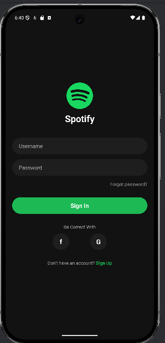
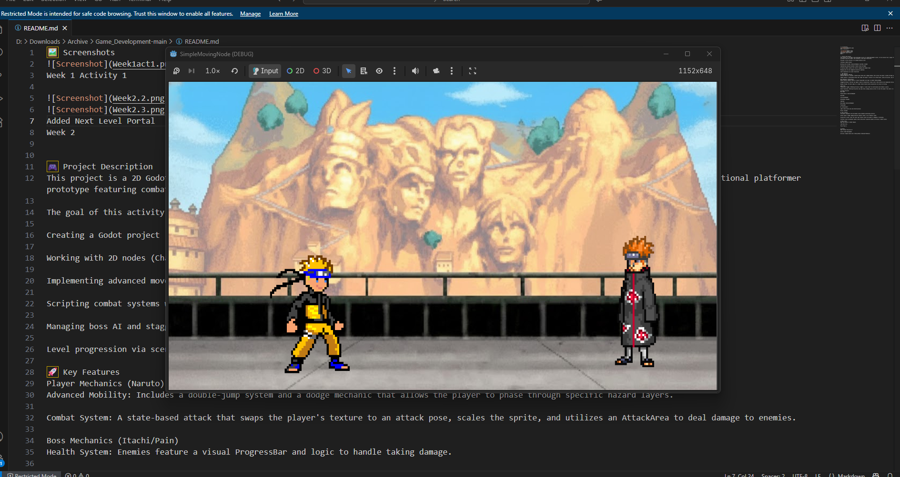
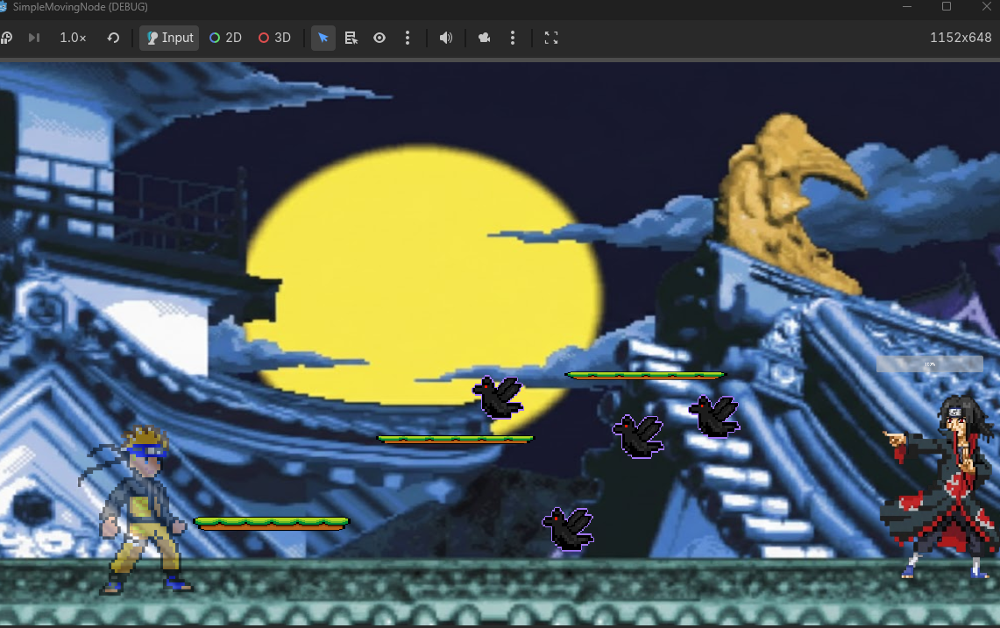
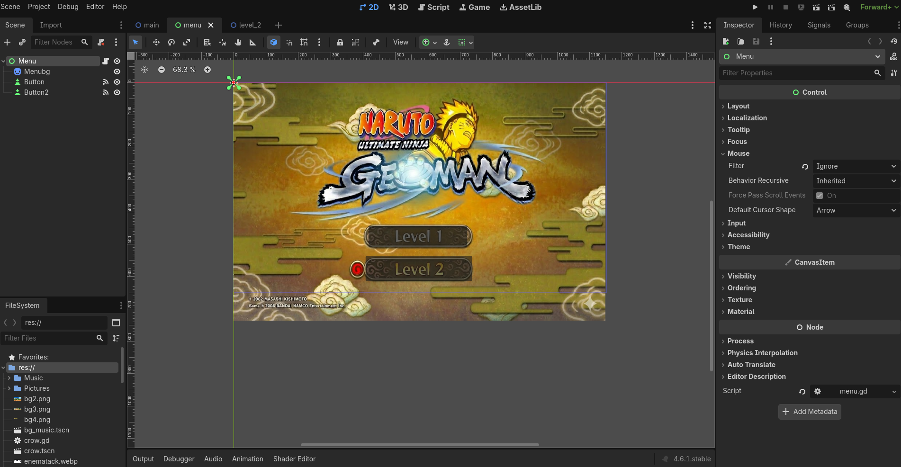
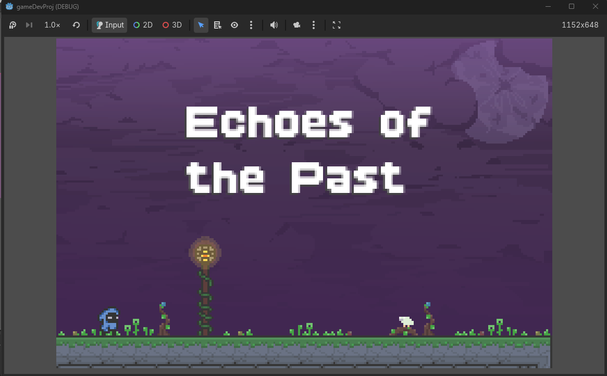
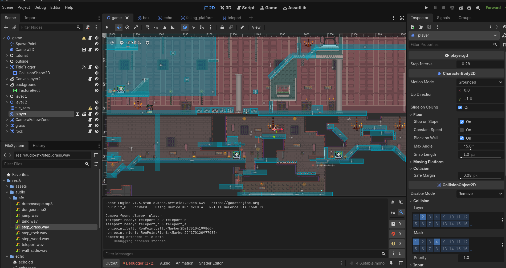
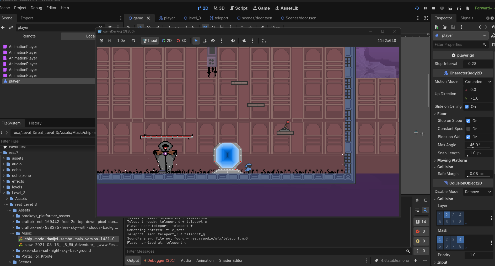

Featured Projects

Spotify UI Clone
A mobile client built using React Native mirroring Spotify's UI design, including authentication flows, smooth navigation transitions, and drawer navigation.



Naruto 2D Multiplayer Game
Developed in the Godot Engine featuring customized animated sprites (Pain), hitboxes, and a multiplayer lobby system with custom HOST and JOIN network functionality.



Echoes of the Past
A collaborative game development project built in the Godot Engine, featuring cohesive gameplay mechanics, custom sprite animation, sound integration, and team-driven workflows.

C.A.P.S.U.L.E.
Capstone • In ProgressA full-stack laboratory inventory and borrowing management system built for the University of San Carlos Department of Pharmacy. Designed to streamline laboratory workflows, it digitizes multi-zone chemical tracking, QR-driven equipment borrowing, schedule conflict prevention, and end-of-semester group liability auditing.